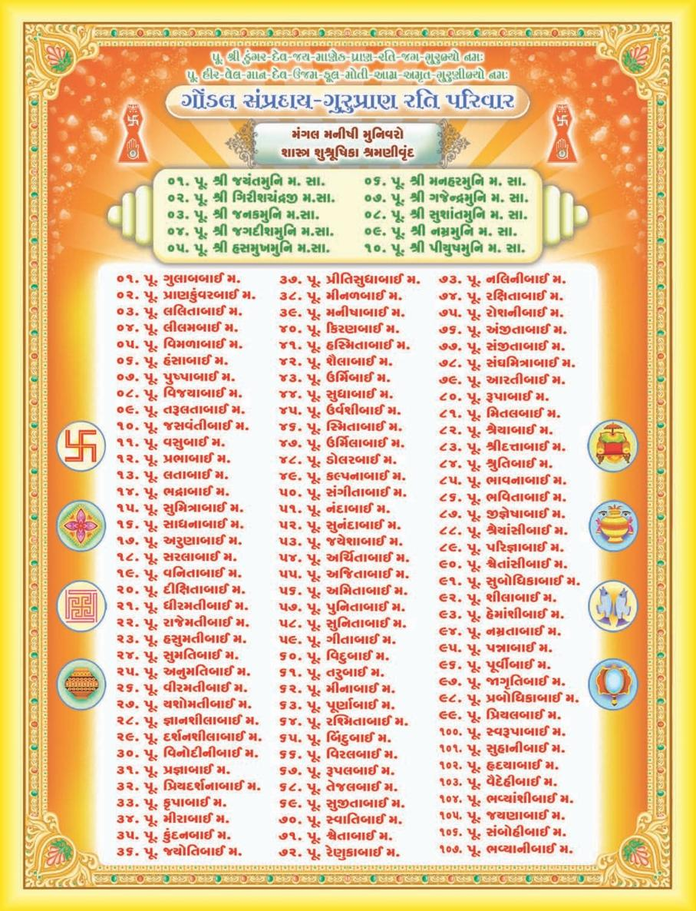

This book Unicode and EPUB Converted by Parth Shah (myself) free of charge as Gyaanseva. You can contact on caparthdshah@gmail.com for further details. You may quote reference "Jain Website"
Old Original Index
9
વિષયાનુક્રમણિકા |
|||||
વિષય |
પૃષ્ટ |
વિષય |
પૃષ્ટ |
||
ઉદ્દેશક–4
અગ્નિકાયની સજીવતા અગ્નિકાયની હિંસાનું પરિજ્ઞાન અગ્નિકાયથી થતી અન્ય વિરાધના અગ્નિકાય હિંસા ત્યાગ ઉદ્દેશક–પ ઈન્દ્રિય વિષય અને સંસાર વનસ્પતિકાયની હિંસાનું પરિજ્ઞાન વનસ્પતિમાં મનુષ્યનાં લક્ષણોની સમાનતા વનસ્પતિકાય હિંસાત્યાગ ઉદ્દેશક–6
ત્રસ જીવોનો દુઃખમય સંસાર ત્રસકાય હિંસા પરિજ્ઞાન પંચન્દ્રિય જીવોની હિંસાના હેતુ ત્રસકાય હિંસા ત્યાગ ઉદ્દેશક–7
વાયુકાયની સૂક્ષ્મતા અને શ્રદ્ધા વાયુકાયિક જીવોની હિંસાનું જ્ઞાન વાયુકાય સાથે બીજી વિરાધના વાયુકાય હિંસા ત્યાગ છ જીવનિકાય હિંસા ત્યાગ અધ્યયન–ર : લોકવિજય અધ્યયન પરિચય ઉદ્દેશક–1
સંસારનું મૂળ – વિષયાસકિત અશરણતાનો પરિબોધ પ્રમાદ પરિવર્જન આત્મ જાગૃતિ ઉદ્દેશક–ર અરિત ત્યાગનુુ ं પરિણામ સંયમમાં સફળ સાધક |
23
રપ 27
28
29
30
31
32
33
36
37
38
39
41
42
43
44
47
49
50
પર 54
56
58 |
પૂ. શ્રી ડુંગરસિંહજી મ.સા.નું જીવન દર્શન પૂ. શ્રી પ્રાણલાલજી મ.સા.નું જીવન દર્શન પૂ. શ્રી રતિલાલજી મ.સા.નું જીવન દર્શન પુનઃ પ્રકાશનના બે બોલ પૂર્વ પ્રકાશનના બે બોલ અભિગમ સંપાદકીય સંપાદન અનુભવો અનુવાદિકાની કલમે 32 અસ્વાધ્યાય અધ્યયન–1 : શસ્ત્રપરિજ્ઞા અધ્યયન પરિચય ઉદ્દેશક–1
આત્માસ્વરૂપનો સબોધ આત્મ અસ્તિત્ત્વનો બોધ કર્મજનક સત્યાવીશ ક્રિયાઓ ક્રિયાઓનું પરિણામ અને તેના કારણો આત્મબોધનો ઉપસંહાર ઉદ્દેશક–ર પૃથ્વીકાયની સજીવતા પૃથ્વીકાયની હિંસાના હેતુ હિંસાનું પરિણામ પૃથ્વીકાયિક જીવોની વેદના પૃથ્વીકાય હિંસા ત્યાગ ઉદ્દેશક–3
અણગારના લક્ષણ અપ્કાયિક જીવોની સજીવતા અપ્કાયિકની હિંસા સંબંધી પરિજ્ઞા પાણીની સજીવતા અને હિંસાનું સૂક્ષ્મજ્ઞાન અપ્કાય હિંસાત્યાગ |
13
15
17
19
21
23
27
33
35
54
1
ર 4
પ 6
8
9
10
11
13
15
17
18
19
20
રર |
||
10
સાવદ્ય અનુષ્ઠાનો અને પ્રયોજનો દંડ ત્યાગ ઉદ્દેશક–3
ગોત્રમૂલક માન–અપમાનનો ત્યાગ પ્રાણીઓની કર્મજન્ય અવસ્થાઓ મરણ નિશ્ચિત છતાં દરેકને જીવનપ્રિય ધનની વૃદ્ધિ અને ગતિ સંસાર પ્રવાહના અપારગામી બોધની પાત્રતા ઉદ્દેશક–4
રોગક્રાંત વ્યક્તિની દશા આશા અને સ્વચ્છંદતાનો ત્યાગ કામાસક્ત મનુષ્યોની દશા ભિક્ષાચરીમાં સમભાવ ઉદ્દેશક–પ ગૃહસ્થાચાર–નિર્દોષભિક્ષાવૃત્તિ દુસ્ત્યાજ્ય કામભોગ , તેનું પરિણામ દીર્ઘદૃષ્ટા સાધક દેહની અસારતા ઈહલૌકિક પ્રવૃત્તિશીલ માનવોની દશા સદોષચિકિત્સા નિષેધ ઉદ્દેશક–6
દોષની પરંપરા મમત્ત્વ અને લોકસંજ્ઞા ત્યાગ અરતિ–રતિ વિવેક કુસાધુ તથા કુશળજ્ઞાની સાધક કુશળ ઉપદેષ્ટા પ્રજ્ઞા પુરુષનો વિવેક અધ્યયન–3 : શીતોષ્ણીય અધ્યયન પરિચય ઉદ્દેશક–1
ભાવથી સુપ્ત – જાગૃત દુઃખની અપ્રિયતા સહનશીલતાથી દુઃખમુÉ T |
59
60
61
63
66
66
68
70
72
72
74
75
81
82
83
85
86
88
)_ 91
93
95
97
101
103
104
106 |
કર્મ અને સંયમના જ્ઞાતા કર્મથી જ સંસાર ઉદ્દેશક–ર સંયમ પુષ્ટિ અને કર્મક્ષય પ્રેરણા સાંસારિક સુખ ચાળણી સમાન સંયમ સમુત્થાન કષાય અને હિંસાત્યાગ બોધ ઉદ્દેશક–3
વૈરાગ્યમય બોધ ભૂત–ભાવી સંબંધી માન્યતાઓ અરતિ , આનંદ , હાસ્ય આદિ નો ત્યાગ આત્મા નિગ્રહથી મુક્તિ સત્ય–સંયમમાં સમુત્થાન ઉદ્દેશક–4
કષાયોનું વમન આત્મજ્ઞાતા સંયમજ્ઞાની પ્રમાદીને ભય આત્મવિજયી સર્વવિજયી એક કષાય જયથી સર્વ કષાયજય શ્રદ્ધાવાનને સંયમનો આદેશ શસ્ત્ર – અશસ્ત્રનો તફાવત ક્રોધાદિ આત્મદોષોનું વિસર્જન અધ્યયન–4 : સમ્યક્ત્વ અધ્યયન પરિચય ઉદ્દેશક–1
અહિંસાનો ત્રૈકાલિક સિદ્ધાંત નિર્વેદ ભાવ અને લોકૈષણા ત્યાગ પ્રજ્ઞાવાનને પ્રબોધ ઉદ્દેશક–ર અવિવેક–વિવેકથી બંધ , મુકિત મૃત્યુની નિશ્ચિતતા હિંસા વિષયક આર્ય–અનાર્યની પ્રરૂપણા ઉદ્દેશક–3
ધર્મવિમુખનો સંગ ત્યાગ |
109
110
112
118
119
120
122
124
127
127
128
130
131
132
133
135
135
136
137
139
140
143
144
145
147
149
152 |
વિષય |
પૃષ્ટ |
વિષય |
પૃષ્ટ |
11
કુશળ ઉપદેષ્ટાની પરિજ્ઞા શરીર નિર્મોહ આરાધના દ્દૃઢ સંકલ્પીનો ક્રોધાદિ ત્યાગ ઉદ્દેશક–4
વિવિધ તપારાધના જિનાજ્ઞા વિરાધક શ્રમણ નિષ્કર્મદર્શીની આરાધના આરાધકોનું અનુકરણ અધ્યયન–પ : લોકસાર અધ્યયન પરિચય ઉદ્દેશક–1
જીવહિંસાનું પરિણામ ત્યાગીને બાલજીવોની અવસ્થાઓનું જ્ઞાન બ્રહ્મચર્યની આરાધના જીવો આરંભજીવી દૂષિત એકલવિહાર ચર્ચા ઉદ્દેશક–ર અનારંભી સાધકની સાધના ધૈર્યવાન સાધક પરિગ્રહધારીને મહાભય પરિણામોથી બંધ–મોક્ષ ઉદ્દેશક–3
અપરિગ્રહી શ્રમણનો પુરુષાર્થ સાધકની ચડતી–પડતી દશા આત્મયુદ્ધ અને તેના સાધન સંવિગ્નપથ સંયમી મુનિ સાધ્વાચાર પાલનની મહત્તા ઉદ્દેશક–4
અપરિપક્વ ભિક્ષુનો એકલવિહાર સમર્પણ ભાવે ગુરુ સાંનિધ્ય ઈર્યા સમિતિવંતને લઘુકર્મબંધ ચલ–વિચલ પરિણામોની ચિકિત્સા ઉદ્દેશક–પ સરોવર સમાન મહર્ષિની મહત્તા |
153
154
156
158
160
162
163
165
167
168
170
171
172
174
177
178
180
181
183
185
187
188
190
193
195
197
200 |
સમ્યક્ત્વની શુદ્ધિ સંપ્રેક્ષણનો દિશાવબોધ ઉત્થિત અને સ્થિતની સ્થિતિ આત્મોપમ્યથી અહિંસાની પુષ્ટિ આત્મવિજ્ઞાતાની સંયમ પર્યાય ઉદ્દેશક–6
સંયમ સુરક્ષા સાધકની સ્વાવલંબી સાધના આગમ આજ્ઞાની પ્રમુખતા ત્રણે લોકમાં આશ્રવ અને બંધ મુક્તાત્માનું સ્વરૂપ અધ્યયન–6 : ધૂત અધ્યયન પરિચય ઉદ્દેશક–1
વક્તા–શ્રોતાનો પરિબોધ આત્મઉત્થાન રહિત પ્રાણીની ઉપમા વ્યાધિગ્રસ્ત પ્રાણીજગત શરીર માટે હિંસાનિષેધ માનવનો મહામુનિ સુધીનો વિકાસ ક્રમ દીક્ષાર્થી સામે આવતા પ્રલોભનો ઉદ્દેશક–ર સાધકનું ઉત્થાન – પતન મુનિની એકત્ત્વભાવના પરીષહોની તિતિક્ષા જિનાજ્ઞાની સર્વોત્તમતા પ્રશસ્ત એકચર્યા ઉદ્દેશક–3
અચેલકમુનિના સંયમ–તપ અસંદીન–દ્વીપ સમાન ધર્મ શિષ્ય પ્રતિ ગુરુનું કર્તવ્યબોધ ઉદ્દેશક–3
શિષ્યની અવિનીતતા સંયમપતિત સાધકો |
202
205
206
207
209
210
211
212
214
216
220
રરર 223
રરપ 228
229
231
233
235
237
239
240
241
245
247
248
251 |
વિષય |
પૃષ્ટ |
વિષય |
પૃષ્ટ |
12
આગમાનુસારી આરાજના ઉદ્દેશક–4
સાધકની સહિષ્ણુતા ધર્મોદેષ્ટા મહામુનિ પરિનિર્વાણદાયક ગુણો કષાયથી મુક્તની મુક્તિ મૃત્યુ સમયે શરીરનું વિસર્જન અધ્યયન–7 : મહાપરિજ્ઞા અધ્યયન પરિચય અધ્યયન–8 : વિમોક્ષ અધ્યયન પરિચય ઉદ્દેશક–1
શ્રમણોમાં આહરનું આદાન–પ્રદાન અન્યધર્મી સાથે આહાર વ્યવહાર નિષેધ અન્યધર્મીના આચાર–વિચાર અનેકાંતિક વીતરાગધર્મ દંડ સમારંભ – વિમોક્ષ ઉદ્દેશક–ર વધ પરીષહ સાધુઓનો પરસ્પર વ્યવહાર ઉદ્દેશક–3
મધ્યમવયમાં નિર્ગ્રંથ સાધના સંયમ નિપુણની ગુણવત્તા ઉદ્દેશક–4
ત્રણ વસ્ત્રના અભિગ્રહધારી મુનિ બ્રહ્મચર્ય અસમાધિમાં વૈહાનસમરણ ઉદ્દેશક–પ બે વસ્ત્રના અભિગ્રહધારી મુનિ સામે લાવેલા આહાર ગ્રહણનો નિષેધ આહાર અભિગ્રહ ભક્ત પ્રત્યાખ્યાન અનશન ઉદ્દેશક–6
એક વસ્ત્રના અભિગ્રહધારી મુનિ ભિક્ષુની એકત્ત્વ અનુપ્રેક્ષા |
256
257
258
262
263
264
267
269
271
272
274
277
278
281
286
288
290
293
298
300
301
302
305
306
307 |
અભિગ્રહધારીનો સ્વાદ પરિત્યાગ સંલેખના–ઇંગિતમરણ ઉદ્દેશક–7
અચેલક મુનિ આહારના આદાન – પ્રદાન સંબંધી અભિગ્રહ પાદપોપગમન અનશન ઉદ્દેશક–8
વિમોક્ષનું જ્ઞાન ભક્ત પ્રત્યાખ્યાન આરાધના ઇંગિતમરણ – અનશન આરાધના પાદપોપગમન – અનશન આરાધના અધ્યયન–9 : ઉપધાનશ્રુત અધ્યયન પરિચય ઉદ્દેશક–1
ભગવાન મહાવીરની દીક્ષા વિહારચર્યામાં જનવ્યવહાર દીક્ષાપૂર્વે ત્યાગ સાધના સમિતિમય સાધના શીત આતાપના ઉદ્દેશક–ર સાધનાકાળના સ્થાનો પ્રભુની અપ્રમત્તદશા વિવિધ ઉપસર્ગ ઉદ્દેશક–3
લાઢ દેશમાં ઉપસર્ગમય સાધના ઉદ્દેશક–4
ભગવાન મહાવીરની ઉગ્ર તપશ્ચર્યા પ્રભુની એષણા સમિતિ પ્રભુની ધ્યાન પરાયણતા પરિશિષ્ટ–1
મુનિશ્રી સંતબાલજીના ચિંતનો પરિશિષ્ટ–ર વિવેચિત વિષયોની અકરાદિ અનુક્રમણિકા 🙣🙣🙣 |
308
310
314
316
318
321
322
327
330
336
338
340
343
348
350
352
353
355
359
365
369
371
375
439 |
વિષય |
પૃષ્ટ |
વિષય |
પૃષ્ટ |
ગુરુપ્રાણ આગમ બત્રીસી અનુવાદિકા મહાસતીજીઓ
પ્રધાન સંપાદિકા ભાવયોગિની બા. બ્ર. પૂ. શ્રી લીલમબાઈ મ.
સહસંપાદિકા સાધ્વી શ્રી આરતીબાઈ મ. તથા સાધ્વી શ્રી સુબોધિકાબાઈ મ.
સાંનિધ્ય : પૂ. શ્રી જયંતમુનિ મ. સા. પૂ. શ્રી ગિરીશચન્દ્રજી મ. સા.
જ્ઞાનદાનના સંપૂર્ણ સહયોગી : પૂ. શ્રી ત્રિલોકમુનિ મ. સા.
સૂત્રનું નામ |
અનુવાદિકા |
શ્રી આચારાંગ સૂત્ર(માગ ૧-૨) |
હસુમતીબાઈ મ. , પૂ. પુષ્પાબાઈ મ. |
શ્રી સૂયગડાંગ સૂત્ર (ભાગ ૧-૨) |
પ્ ઉર્મીલાબાઈ મ. |
શ્રી ઠાણાંગ સૂત્ર (ભાગ ૧-૨) |
વીરમતીબાઈ મ. |
શ્રી સમવાયાંગ સૂત્ર |
વનીતાબાઈ મ. |
શ્રી ભગવતી સૂત્ર(૧ થી પ ભાગ) |
ડોં. આરતીબાઈ મ. |
શ્રી જ્ઞાતા સૂત્ર |
સુમનબાઈ મ. |
શ્રી ઉપાસકદશાંગ સૂત્ર |
ઉર્વશીબાઈ મ. |
શ્રી અંતગડદશાંગ સૂત્ર |
ભારતીબાઈ મ. |
શ્રી અનુત્તરોવવાઈ સૂત્ર |
સન્મતિબાઈ મ. |
શ્રી પ્રશ્નવ્યાકરણ સૂત |
સુનિતાબાઈ મ. |
શ્રી વિપાક સૂત્ર |
ઉષાબાઈ મ. |
શ્રી ઉવવાઈ સૂત્ર |
કલ્પનાબાઈ મ. |
શ્રી રાજપ્રશ્રીય સૂત્ર |
બિંદુ-રૂપલ દ્રય મ. |
શ્રી જીવાભિગમ સૂત્ર |
પુનિતાબાઈ મ. |
શ્રી પ્રજ્ઞાપના સૂત્ર(ભાગ-૧ થી ૩) |
સુધાબાઈ મ. |
શ્રી જંબૂદ્વિપપ્રજ્ઞપ્તિ સૂત્ર |
મુક્તાબાઈ મ. |
શ્રી જયોતિષગણરાજ પ્રજ્ઞપ્તિ સૂત્ર (ચંદરપ્રજ્ઞપ્તિ , સૂર્યપ્રજ્ઞપ્તિ) |
રાજેમતીબાઈ મ. |
શ્રી ઉપાંગસૂત્ર(શ્રી નિરયાવલિકાદિ) |
કિરણબાઈ મ. |
શ્રી ઉત્તરાધ્યયન સૂત્ર (ભાગ-૧ , ૨) |
ડો. અમિતાબાઈ મ. પૂ. સુમતિબાઈ મ. |
શ્રી દશવૈકાલિક સૂત્ર |
ગુલાબબાઈ મ. |
શ્રી નંદી સૂત્ર |
પ્રાણકુવરબાઈ મ. |
શ્રી અનુયોગદ્દાર સૂત્ર |
પૂ. સુબોધિકાબાઈ મ. |
શ્રી નિશીથ સૂત્ર |
પૂ. લીલમબાઈ મ. |
શ્રી ત્રણ છેદ સૂત્ર |
પૂ. ડો. ડોલરબાઈ મ. |
શ્રી આવશ્યક સૂત્ર |
પૂ. રૂપાબાઈ મ. |
શ્રુતાધાર (મુખ્યદાતા)
પિતાશ્રી ડો. નાનાલાલ ગુલાબચંદ શાહ (હેમાણી) માતુશ્રી સવિતાબેન નાનાલાલ શાહ
પિતા ગુલાબચંદભાઈ તથા માતુશ્રી જવેરબેનના ધર્મ સંસ્કારે રંગાયેલા ડો. નાનુભાઈ શાહે વેરાવળ બંદરને પોતાની કર્મભૂમિ બનાવી. અનેક દર્દીઓના મસિહા બની , સ્વાસ્થ્ય દાતા બન્યા.
વેરાવળ , ઉના શ્રી સંઘમાં પ્રમુખ પદે રહી શાસન સેવાના કાર્ય કર્યા. સવિતાબેન પણ શ્રાવિકા મહિલા મંડળના , કસ્તુરબા મહિલા મંડળના પ્રમુખા બની સામાજિક , ઘાર્મિક ક્ષેત્રે મહિલા ઉન્નતિના કાર્ય કરતા રહ્યા.
ધર્મપરાયણ , ચોથા આરાના જુગલિયા જેવા આ દંપત્તિ બંને સાથે મળીને ધર્મ આરાધના કરતાં હોય તે દશ્ય અનુપમ બની જતું.
નિવૃત્તિના સમયમાં આત્માના ડોક્ટર બની જૈનાગમ , કર્મ સિદ્ધાંત આદિના વાંચન દ્વારા તેઓએ પોતાના જ્ઞાન ખજાનાને એવો સમૃદ્ધ બનાવ્યો કે સંત-સતીજીઓને વેરાવળ ચાતુર્માસ પધારવા માટે તેઓ આકર્ષણનું કેન્દ્ર બની ગયા હતા.
ભત્રીજી ભદ્રા (પૂ. સુબોધિકાબાઈ મ.) ને દીક્ષાની પ્રેરણા , અનુજ્ઞા આપી શાસનસેવા , કર્મક્ષયના ભાગીદાર બન્યા છે. આપના સંસ્કારોની સુવાસ સાથે લઈ અમેરીકા વસતા સુપુત્ર શ્રી સતીષભાઈ અને પુત્રવધુ સો. રશ્મીબેન સામાજિક , ધાર્મિકક્ષેત્રે યોગદાન આપી રહ્યાં છે. સુપુત્રી ડો. ભારતી શાહ , જમાઈરાજ ડો. શ્રી રશ્મિકાંતભાઈ વિશાળ કુટુંબમાં સ્વ કર્તવ્યોને નિભાવતા , વડિલોની સેવા દ્વારા નિજ હૃદયને પુલકિત તથા જીવનને સભર બનાવી રહ્યા છે.
શાસનના સ્તંભસમા આગમ પ્રકાશનમાં સહયોગ આપી , આપે ભદ્રકર્મ- પુણ્યકર્મને સંચિત કર્યું છે. આપની આ શ્રુતસેવાના ઘણા-ઘણા ધન્યવાદ છે.
ગુરુપ્રાણ પ્રકાશન

શાસ્ત્ર સ્વાધ્યાય પ. સદ્વિવેક
તીર્થંકર પ્રભુના પવિત્ર ઉપદેશરૂપ આગમગ્રંથો દરેક ધર્મનિષ્ઠ સ્વાધ્યાયપ્રેમી શ્રમણોપાસકે પોતાના ઘરમાં વસાવવા જોઈએ .
તીર્થકરોની અનુપસ્થિતિમાં તીર્થકરોના ઉપદેશરૂપ ગ્રંથો સાક્ષાત્ તીર્થંકર તુલ્ય માનીને આગમગ્રંથોને ઘરમાં કબાટ કે શોકેશમાં સુવ્યવસ્થિત રૂપે રાખવા .
પ્રતિદિન તીર્થકરોને સ્મૃતિપટ પર લાવી અહોભાવપૂર્વક ત્રણ ભાવ વંદન કરવા . ઘરના સદસ્યોએ સાથે મળી શ્રધ્ધાપૂર્વક આગમવાંચન કરવું.
વિનય ધર્મનું મૂળ છે તેથી શાસ્ર સ્વાધ્યાય માટે ગુરુની આજ્ઞા લેવી.
૩૨ આગમગ્રંથોમાંથી કાલિક સૂત્રના મૂળપાઠનો સ્વાધ્યાય દિવસના પ્રથમ અને ચોથા પ્રહરમાં અને ઉત્કાલિક સૂત્રના મૂળપાઠનો સ્વાધ્યાય અસ્વાધ્યાય કાલને છોડીને એટલે કે બે સંધ્યા અને બે મધ્યાહન કાલીન ૪૮ મિનિટને છોડીને ગમે ત્યારે કરી શકાય છે.
પ્રાતઃ ઉષાકાલ , સંધ્યાકાલ , મધ્યાહ્ય અને અર્ધરાત્રિએ બે - બે ઘડી શાસ્ત્રનો મૂળપાઠ વાંચવો નહીં.
૩૨ અસ્વાધ્યાયમાં શાસ સ્વાધ્યાય થાય નહીં.
ઘરમાં સંડાસ - બાથરૂમ હોય , સ્રીઓને માસિકધર્મ હોય , વગેરે કારણોથી ઘરમાં આગમ રાખવાથી અશાતના થાય , તેવી માન્યતા યોગ્ય નથી કારણકે સાધ્વીજી પોતાની પાસે આગમ ગ્રંથો રાખે છે.
માસિક ધર્મવાળા બહેનોએ શાસ્ત્રના મૂળપાઠનો સ્વાધ્યાય કરવો નહીં. તે વ્યક્તિની સામે પણ સ્વાધ્યાય કરવો નહીં. તેનાથી દૂર અલગ સ્થાનમાં બેસીને સ્વાધ્યાય કરી શકાય છે. ગુજરાતી અનુવાદ , ભાવાર્થ , વિવેચન , માસિક ધર્મમાં પણ બહેનો વાંચી શકે છે. તેમાં કોઈ જાતની અશાતના નથી.
આ સમસ્ત નિયમો મૂળપાઠ વાંચવા કે સ્વાધ્યાય કરવા માટેના છે. કેવળ શાસ્રોના ગુજરાતી ભાવાર્થ વાંચવા હોય , તો ઉપરોક્ત નિયમો લાગુ પડતા નથી. આગમગ્રંથોના આધારે જ ભૂતકાલમાં અનંત જીવોએ આત્મકલ્યાણ કર્યું છે. આગમગ્રંથોના આધારે જ પાંચમા આરાના અંત સુધી જિનશાસન જયવંતું રહેશે. તેથી આગમગ્રંથોનું સંપૂર્ણતઃ બહમાન જાળવવું.
આચાર્ય જીવન પરિચય
ગોંડલ ગચ્છાધિપતિ એકાવતારી આચાર્ય પ્રવર પૂ. ગુરુદેવ શ્રી ડુંગરસિંહજી મ.સા.
નામ ડુંગરસિંહભાઇ .
જન્મ વિ.સં. ૧૭૯૨ :
જન્મભૂમિ માંગરોળ.
પિતાશ્રી ધર્મનિષ્ઠ શ્રીકમળસિંહભાઇ બદાણી.
માતુશ્રી સંસ્કાર સંપન્ના શ્રીમતી હીરબાઇ .
જન્મસંકેત માતાએ સ્વપ્નમાં લીલોછમ પર્વત અને કેસરી સિંહને પોતાની સમીપે આવતો જોયો .
ભાતૃભગિની ચારબેન - બેભાઇ.
વૈરાગ્ય નિમિત્ત પૂ. શ્રીરત્નચંદ્રજી મ.સા.નો ઉપદેશ.
સંચમ સ્વીકાર વિ.સં. ૧૮૧૫કારતક વદ - ૧૦ દિવબંદર.
સદ્ગુરુદેવ પૂ. શ્રીરત્નચંદ્રજી મ.સા.
સહદીક્ષિત પરિવાર સ્વયં , માતુશ્રી હીરબાઇ , બહેન વેલબાઇ,
ભાણેજી - માનકુંવરબેન અને ભાણેજ - હીરાચંદભાઇ.
સંચમ સાધના અપ્રમત્તદશાની પ્રાપ્તિ માટે સાડા પાંચ વર્ષ નિદ્રાત્યાગ , જ્ઞાનારાધના , ધર્મશાસ્રો , દર્શનશાસ્રો અને તત્ત્વજ્ઞાનનો અભ્યાસ.
તપ આરાધના રસેન્ટ્રિય વિજયના વિવિધ પ્રયોગો , મિતાહાર. સ્વાધ્યાય , સાડાપાંચ વરસ નિદ્રાત્યાગ , ધ્યાનરૂપ આભ્યંતર તપ.
ગોંડલ ગચ્છ સ્થાપના & વિ.સં. ૧૮૪૫ મહાસુદ - પ ગોંડલ. તથા આચાર્ય પદ પ્રદાન
જ્વલંત ગુણો & વિનય , વિવેક , વિચક્ષણતા , વિરક્તિ , કરૂણા , સમયસૂચકતા વગેરે...
પ્રમુખ શીષ્ય પૂ. આચાર્ય શ્રી ભીમજી સ્વામી
પ્રમુખ શીષ્યા પૂ. શ્રી હીરબાઈ મ., પૂ. શ્રી વેલબાઈ મ. પૂ. શ્રી માનકુંવરબાઇ મ.
સાધુસંમેલન વિ. સં. ૧૮૬૧માં આજ્ઞાનુવર્તી ૪૫ જેટલા સાધુ- સાધ્વીજીઓનું સંમેલન કરી સંતોની આચાર વિશુધધિ માટે ૧૩ નિયમો બનાવ્યાં.
વિહાર ક્ષેત્ર કાઠિયાવાડ , ઝાલાવાડ: કચ્છ , માંગરોળ , વેરાવળ , પોરબંદર , દીવબંદર આદિ કંઠાળ પ્રદેશમાં ગ્રામાનુગ્રામ.
પ્રતિબોધિત શ્રાવકવર્ય શ્રી શોભેચંદ્ર કરસનજી શાહ - વેરાવળ.
સ્થિરવાસ વિ.સં. ૧૮૭૧ ચૈત્ર સુદ - ૧૫ થી ગોંડલમાં.
અનશન આરાધના વિ. સં. ૧૮૭૭ ફાગણ સુદ - ૧૩ થી અનશન પ્રારંભ , વેશાખ સુદ - ૧૫ સમાધિમરણ.
આયુષ્ય ૮૪ વર્ષ સંયમ પર્યાય - ૬૨ વર્ષ , આચાર્ય પદ - ૩૨ વર્ષ.
ઉત્તરાધિકારી આચાર્ય પૂ. શ્રી ભીમજી સ્વામી.
ઉપનામ ગચ્છાધિપતિ , નિદ્રાવિજેતા , યુગપ્રધાન , એકાવતારી.
પાટપરંપરા ગોંડલ ગચ્છાધિપતિ આચાર્ય પ્રવર ગુરૂદેવ
પૂ. શ્રીડુંગરસિંહજી મ.સા.
દ્રિતીય પટ્ધર - આચાર્ય પૂ. શ્રી ભીમજી સ્વામી. તૃતીય પટ્ધર - આચાર્ય પૂ. શ્રી નેણસી સ્વામી.
ચતુર્થ પટ્ધર - આચાર્ય પૂ. શ્રી જેસંગજી સ્વામી. પંચમ પટ્ધર - આચાર્ય પૂ. શ્રી દેવજી સ્વામી. મહાતપસ્વી પૂ. શ્રી જયચંદ્રજી સ્વામી
યુગદષ્ટા તપસ્વી પૂ. શ્રી માણેકચંદ્રજી મ.સા.
સૌરાષ્ટ કેસરી ગુરુદેવ પૂ. શ્રી પ્રાણલાલજી મ.સા. તપસમ્રાટ ગુરુદેવ પૂ. શ્રી રતિલાલજી મ.સા.
વિદ્યમાન વિચરતો પરિવાર ૧૧ સંતો , ૩૦૦ જેટલા સતિજીઓ.
સૌરાષ્ટ્રકેસરી મુનીપુંગવ પૂ. ગુરુદેવ શ્રી પ્રાણલાલજી મ.સા.
શુભ નામ પ્રાણલાલભાઈ
જન્મભૂમિ વેરાવળ.
પિતા શ્રીમાન શ્રી કેશવજીભાઈ મીઠાશા.
માતા સંસ્કાર સંપજ્ઞા કુંવરબાઈ.
જ્ઞાતિ વીસા ઓસવાળ.
જન્મદિન વિ. સં. ૧૯૫૪ , શ્રાવણ વદ પાંચમ , સોમવાર.
ભાતૃ-ભગિની ચાર ભાઈ , ત્રણ બહેનો.
વૈરાગ્ય બીજારોપણ બે વર્ષની બાલ્યવયે.
વૈરાગ્ય ભાવ-પ્રગટીકરણ ૧૩ વર્ષની કુમાર અવસ્થામાં.
સંયમ સ્વીકાર ૨૧ માં વર્ષે વિ. સં. ૧૯૭૮ ફાગણ વદ છઠ્ઠ , ગુરવાર. તા. ૧૩-૩-૧૯૨૦
દીક્ષા ભૂમિ બગસરા-દરબાર વાજસુરવાળાના ઉઘ્યાનમાં વટવુક્ષ નીચે.
ગચ્છ પરંપરા ગોંડલ ગચ્છ.
સંયમદાતા મહાતપસ્વી પૂ. જયચંદ્રજી મ.સા.
શિક્ષા દાતા પરમ શ્રદ્ધેય તપસ્વી માણેકચંદ્રજી મ. સા.
ધાર્મિક અભ્યાસ આગમજ્ઞાન , તત્ત્વજ્ઞાન , કથા સાહિત્ય , રાસ સાહિત્ય , વ્યાકરણ , મહાકાવ્યો , કર્મસાહિત્ય , જૈનેતર ગ્રંથોનું વિશાળ અવલોકન , દર્શન શાસ્ત્રના તજજ્ઞ.
સંઘ નેતૃત્વ ત્રણ વર્ષની દીક્ષા પર્યાયે તપસ્વી પૂ. માણેકચંદ્રજી.મ. સા. તા સંથારાના સમયથી.
સેવા શુશ્રૂષા વડીલ સાત ગુરુભ્રાતા અને અનેક સંતોની સેવા કરી.
સમાજોત્કર્ષ ચતુર્વિધ સંઘ સમાધિ માટે તારવેલા ત્રણ સિદ્ધાંત
૧ ) લોકના પરોપકાર માટે દાનધર્મનિપ્રધાનતા
૨ ) અખંડનવાદ
૩ ) નીતિ અને પ્રામાણિકતાનું આંદોલન, જેન-જૈનેતરો (કાઠી , દરબાર , આહિર)ને સપ્ત વ્યસનથી મુક્તિ , અનેક સ્થાને સાધર્મિક રાહત યોજના.
જ્ઞાન પ્રસાર રાજકોટ , ગોંડલ , જેતપુર , ધોરાજી , વડિયા , વેરાવળ , પોરબંદર , માંગરોળ , જામનગર , ભાવનગર વગેરે અનેક સ્થાને જ્ઞાન ભંડાર , વિધાલયની સ્થાપના અને જીર્ણોધ્ધાર.
દેહ વૈભવ લાવણ્યમયી મુદ્રા , સૂર્ય સમ તેજસ્વી મુખ , ચંદ્રસમી શાંત આભા , વિશાળ ભાલ , નૂરભર્યા નયનો , ઘૂઘરાળા કેશ , વીણા જેવો સુમધુર કંઠ અને સિંહ જેવી ગર્જના.
આભ્યંતર વૈભવ વિનય સંપજ્ઞતા , વિવેક , સાદાઈ , પ્રેમ , વૈરાગ્ય , સેવા , પ્રવચન-પટુતા , ગુરુચરણ સેવા , દીર્ઘ દષ્ટિ , ત્યાગમસ્તી.
વિહાર ક્ષેત્ર સૌરાષ્ટ્ર , ગુજરાત.
ગોંડલ ગચ્છ સંમેલન વિ. સં. ૨૦૦૭માં ગચ્છ એક્યતા માટે મહત્ત્વનું યોગદાન.
ઉપનામ પંજાબ કેસરી કાશીરામજી મ. સા. દારા પ્રદત્ત "સૌરાષ્ટ્ર કેસરી"
સ્વહસ્તે દીક્ષિત પરિવાર ચાર સંત- તપોધની પૂ. રતિલાલજી મ. સા. , અનશન આરાધક તપસ્વી પૂ. જગજીવનજી મ. સા. , પૂ. નાના રતિલાલજી મ. સા. , પરમ દાર્શનિક પૂ. જયંતમુનિજી મ. સા. , પૂ. મોટા પ્રભાબાઈ મ. આદિ ૧૫ સતીજી.
અંતિમ ચાતુર્માસ બગસરા.
દેહ વિલય વિ. સં. ૨૦૧૩ માગસર વદ તેરસ , શનિવાર પ્રાતઃ ૭-૩૦ કલાકે ઈ. સ. ૨૯-૧૨-૧૯૫૬.
અંતિમ વિધિ સાતલડી નદીના કિનારે (બગસરા)
શિષ્ય પરિવાર વર્તમાને ૧૧૮ સંત-સતિજીઓ "પ્રાણ પરિવાર" ના તમે સમગ્ર ભારતમાં પ્રસિદ્ધ છે.
તપસમ્રાટ પૂ. ગુરુદેવ શ્રી રતિલાલજી મ.સા.
શુભ નામ રતિલાલભાઈ
જ ન્મસ્થાન પરબવાવડી (સૌરાષ્ટ્ર)
જન્મદિન આસોવદ અમાસ વિ.સં. ૧૯૮૯
પિતા શ્રીમાન માધવજીભાઈ રૈયાણી
માતા સદાચાર સંપજ્ઞા જમકુબાઈ
વૈરાગ્ય ભાવ ૧૭ માવર્ષે
દીક્ષા ફાગણ વદ પાંચમ , ગુરવાર વિ. સં. ૧૯૮૯-જૂનાગઢ
ગુરુદેવ સૌરાષ્ટ્ર કેસરી પૂ. પ્રાણલાલજી મ.સા.
ગચ્છ પરંપરા ગોંડલ ગચ્છ.
અભ્યાસ યોગ વ્યાવહારિક- પાંચ ધોરણ , ધાર્મિક ૧૯ આગમ કંઠસ્થ , શ્વેતામ્બર-દિગંબર સાહિત્ય , કાર્મગ્રંથિક સાહિત્ય , દાર્શનિક સાહિત્ય , વ્યાકરણ સાહિત્ય
સાધના યોગ રાત્રિ-દિવસ નિરંતર જાગૃતદશાએ આત્મસાધના અલ્પનિદ્રા.
સેવાયોગ વડીલ વૃદ્ધ ૯ સંતોની સેવા કરી.
તપયોગ ૧૯ વર્ષ એકાંતર ઉપવાસ , ૯૯૯ આયંબિલ તપ (સાગાર) , ૧૯ વર્ષ પાણીનો ત્યાગ , ૯ વર્ષ મકાઈ સિવાય શેષ અનાજ ત્યાગ.
મૌનયોગ દિક્ષા પછી ૯ વર્ષ એકાંત મૌનસાધના ઈ.સ . ૧૯૯૨ નવેમ્બરથી આજીવન મોન આરાધના.
પુન્યપ્રભાવ ગુરુદેવના પુણ્ય પ્રભાવે અનેક આત્માઓએ માસખમણ આદિ નાની મોટી તપશ્ચર્યાઓ તથા હજારોની સંખ્યામાં વર્ષીતપની" આરાધના કરી છે. તેમજ દાન , ચત અને ભાવની વૃદ્ધિ થઈ છે.
વિહાર ક્ષેત્ર ગુજરાત , મહારાષ્ટ્ર , મધ્યપ્રદેશ , ઓરિસ્સા , બિહાર , બંગાળ
જ્ઞાન અનુમોદન શ્રમણી વિદ્યાપીઠના પ્રેરક બની ૩૦ શિષ્યાઓ અને ૩૦ વૈરાગી બહેનોને અભ્યાસાર્થે રહેવાની આજ્ઞા આપી. ત્રણ સામૂહિક ચાતુર્માસ કરાવી શાસ્ત્રવાચના કરાવી.
દીક્ષા પ્રદાનસખ્યા ૧૪૫ મુમુક્ષુઓને અણગાર બનાવ્યા.
આચરિત સૂત્રો જતું કરવું , ગમ ખાવો , વાદ-વિવાદ કે દલીલ ન કરવા , જે થાય તે સારા માટે , કોઈ પણ જીવની ટીકા કે નિંદા ન કરવી.
જીવંત ગુણો વિશાળતા , ઉદારતા , માધ્યસ્થતા , સહિષ્ણુતા , ભદ્રિકતા , સમાધાન વૃત્તિ , જ્ઞાનરચિ.
અનશન પ્રત્યાખ્યાન ઈ. સ. ૧૯૯૨ રાજકોટમાં પૂ. ભાગ્યવંતાબાઈ મ. ને ૫૯ દિવસની અનશન આરાધના કરાવી.
અંતિમ ચાતુર્માસ રાજકોટ , શ્રી રોયલપાર્ક સ્થાનકવાસી જૈન મોટા સંઘ સંચાલિત ઓમાનવાળા ઉપાશ્રય. (૧૯૯૭)
મહાપ્રયાણ રાજકોટ , તા. ૮-૨-૧૯૯૮ મહા સુદ ૧૧॥ રવિવાર મધ્યાહ કાળે ૧.૩૫ કલાકે.
અંતિમ દર્શન તથા પાલખી શ્રી રોયલ પાર્ક સ્થાનકવાસી જૈન મોટા સંઘ , રાજકોટ.
અંતિમક્રિયા સ્થાન તપસમ્રાટ તીર્થધામ" , રાજકોટ-અમદાવાદ હાઈ-વે , સાત હનુમાન સામે રાજકોટ .
પ્રકાશકના બે બોલ
પુન : પ્રકાશનના બે બોલ (બીજી આવૃત્તિ)
તીર્થંકર ભગવાનના અમૃતસમા વચનોને "આગમ" રૂપે ગણધર ભગવંતોએ ઝીલીને શિષ્ય પરંપરાને અર્પ ણ કર્યાઅને આપણને અમૃત વચનો પ્રાપ્ત થયા .
તીર્થંકર ભગવાને અનંતજ્ઞાનને શ્રીમુખેથી પ્રગટકરી મહા ઉપકાર કર્યો.. .
ગણધર ભગવંતોએ આગમજ્ઞાનને હદયસ્થ કરી મહા ઉપકાર કર્યો...
શિષ્ય પરંપરાએ આગમ જ્ઞાનને કંઠસ્થ કરી મહા ઉપકાર કર્યો...
દેવર્દ્ધિગણિ ક્ષમાશ્રમણે આગમજ્ઞાનને ગ્રંથસ્થ કરી મહા ઉપકાર કર્યો...
ગ્રંથસ્થ આગમોને અનેક આચાર્યોએ સમયાનુસાર લોકભોગ્ય ભાષાશેલીમાં અનુવાદ કરીને સર્વજન સહજ બનાવ્યા. આ જ પરંપરામાં સૌરાષ્ટ્રકેસરી પૂ. ગુરુદેવ શ્રી પ્રાણલાલજી મ. સા. ની જન્મશતાબ્દી અવસરે તેમના જ પરિવારના મહાસતીજીઓએ ગુજરાતીમાં અનુવાદ કરીને જૈન સમાજની જ્ઞાન સાધનાને આગમિક બનાવવામાં બહમૂલો ફાળો આપ્યો છે. આ મહા કાર્યમાં અપૂર્વ શ્રુત આરાધિકા પ્રધાન સંપાદિકા ભાવચોગિની શ્રી લીલમબાઈ મ. અને સહ સંપાદિકા શ્રી આરતીબાઈ મ. , શ્રી સુબોધિકાબાઈમ. ના સહયોગ મળ્યો છે.
આ આગમ બત્રીસીની પ્રથમ આવૃત્તિને ગુજરાતના દરેક સંપ્રદાયના સાધુ- સાધ્વી , શ્રાવક-શ્રાવિકાઓનો બહોળો પ્રતિસાદ મળતા ટૂંક સમયમાં ૧૦૦૦ આગમ ગ્રંથો અનુપલબ્ધ થઈ ગયા અને પુનઃ પ્રકાશનની આવશ્યકતા ઉભી થઈ.
અહીં એક ખાસ ઉલ્લેખ કરવાનો કે જ્યારે પ્રથમવાર આગમ પ્રકાશનની તૈયારી ચાલતી હતી ત્યારે જ તપસમ્રાટ પૂડ ગુરુદેવ શ્રી રતિલાલજી મ. સા. એ શાસન પ્રભાવક પૂ. શ્રી નમ્રમુનિ મ. સા. પર કૃપાદષ્ટિ વરસાવી. તેમણે પાટીમાં લખી આપ્યું કે નમ્રમુનિ આગમ પ્રકાશનનું કાર્ય સંભાળશે.
પૂ. ગુરુદેવની દીર્ઘદૃષ્ટિ અને કૃપાદષ્ઠિને અનુભવતા પૂ. ગુરુદેવ શ્રી નમ્રમુનિ મ. સા. એ અમોને આજ્ઞા આપી કે આપણે આગમ ગ્રંથો પ્રકાશનની બીજી આવૃતિ "પારસધામ" ના ઉપક્રમે પ્રગટ કરવી છે.
પૂ. ગુરૂદેવ શ્રી નમ્રમુનિ મ. સા. ની આજ્ઞાને શિરોધાર્ય કરીને પારસધામ - ઘાટકોપરના ઉપક્રમે ગુરપ્રાણ આગમ બત્રીસીને પુનઃ પ્રગટ કરતા આનંદ અનુભવીએ છીએ.
અમારા આ અણમોલ કાર્યમાં અમને શ્રી ગિરીશભાઈ શાહ (હેમાણી)-ઇ. 5./. તથા શ્રી જિતેનભાઈ શાહ (કલકત્તા) નો અનન્ય સહકાર મળ્યો , જેના કારણે અમારું કાર્ય સરળ બન્યું છે. તેવી જ રીતે ઉદારદિલા દાતાશ્રીઓ એ પણ અમને સહયોગ આપીને અમારું કાર્ય વેગવાન બનાવેલ છે.
અમે તે સર્વના આભારી છીએ.
અંતમાં આગમ પ્રકાશન આપણા સહના આત્માને અનંતજ્ઞાન પ્રાગટયમાં સહયોગી બને એ જ ભાવના.
શ્રી ગુરુપ્રાણ પ્રકાશન વલ્લભબાગ લેન , તિલક રોડ , ઘાટકોપર(ઈસ્ટ) , મુંબઈ - ૪૦૦૦૭૭ ફોન - ૩૨૦૪ ૩૨૩૨.
પ્રકાશકના બે બોલ(પહેલી આવૃત્તિ)
અનંત તીર્થંકર સહ પ્રભુ મહાવીરના અનંત જ્ઞાનની અમૂલ્ય નિધિ છે આપણા આગમગ્રંથો. જેના માધ્યમથી જ જિનશાસન જયવતું રહ્યું છે , રહે છે અને રહેશે. તેને જીવંત રાખવા અને જન જનનાં મન સુધી પહોંચાડવા તે પ્રત્યેક જૈન નામ ધરાવતી વ્યક્તિની પવિત્ર ફરજ છે. આ પવિત્ર ફરજને જ ધર્મ સમજીને જે તેનું આચરણ કરે છે અને પોતાનાં તન-મન અને ધનને તે કાર્યમાં સમર્પિત કરે છે , તેનું મનુષ્ય જીવન સફળ થાય છે. એટલું જ નહીં પરંતુ તે સાધક જિનશાસનનની પ્રભાવનાનો અમૂલ્ય લાભ પ્રાપ્ત કરે છે.
આવો જ અપૂર્વ લાભ પ્રાપ્ત કરવા આપણા ગુજરાતી સમાજને માટે આગમોના મૂળ પાઠ તથા સરળ ગુજરાતી અનુવાદ વિવેચન સહિત પ્રકાશન કરવા માટે પૂ. મુક્ત લીલમ પરિવારને એક ચિંતનધારા જૂનાગઢની પુણ્યભૂમિ પર સ્પર્શી અને જેને રાજાણા નગરી રાજકોટમાં રોયલપાર્ક ઉપાશ્રયમાં સાકાર સ્વરુપ મળ્યું.
આપણા સૌના પરમ ઉપકારી ગોંડલ ગચ્છાધિપતિ , નિદ્રા વિજેતા , એકાવતારી , યુગપુરુષ પૂ. શ્રી ડુંગરસિંહજી મ. સા.ની પાટ પરંપરાએ પૂ. શ્રી જય-માણેકના લાડીલા શિષ્યરત્ન સૌરાષ્ટ્ર કેસરી પૂ. શ્રી પ્રાણલાલજી મ. સા.ની જન્મ શતાબ્દી નિમિત્તે આ વિરાટ આયોજન કર્યું. પૂ. મહાસતીજીઓએ પોતાની ચિંતનધારાને પૂજ્ય ગુરવર્યોની સમક્ષ પ્રગટ કરી. સહુના હર્ષોલ્લાસ અને આશીર્વાદ સાથે સ્વીકૃતિના સમાચાર પ્રાપ્ત થયા. રોયલપાર્ક સ્થા. જૈન મોટા સંઘની નિશ્રામાં અમે તુરંત સમિતિ રચવાની જાહેરાત કરી.
રાજકોટ પ્રાણ પરિવારના સામૂહિક ચાતુર્માસ દરમ્યાન જન્મ શતાબ્દી વર્ષ નિમિત્તે વિ. સં. ૨૦૫૩ સન્ ૧૯૯૭ માં "પૂ. પ્રાણગુરુ શતાબ્દી પ્રકાશન સમિતિ રાજકોટ"ની સ્થાપના થઈ. ત્યાર પછી તપસ્રાટ શ્રી રતિલાલજી મ. સા. , ગુજરાત કેસરી પૂ. શ્રી ગિરીશચંદ્રજી મ. સા. ઠા. પાંચ તથા પ્રાણ પરિવારના ૭૩ સાધ્વીજીઓના પાવન સાંનિધ્યમાં જન્મ શતાબ્દીના પ્રથમ ચરણની તપ-જ૫ , સાધના સાથે ભવ્ય રીતે ઉજવણી કરવામાં આવી.
શ્રી ગુરુ પ્રાણ ફાઉન્ડેશન ટ્રસ્ટ દ્વારા ૩૨ આગમો અને પ્રાણગુરુ સ્મૃતિ ગ્રંથનું પ્રકાશન કરવાનું નિશ્ચિત થયું. આગમોનું લેખન કાર્ય પ્રાણ પરિવારના સતીવુંદે સહર્ષ સ્વીકારી લીધું. આ રીતે સર્વ સમવાયનો સુયોગ થતાં કાર્યનો પ્રારંભ વેગવંત થયો અને બત્રીસ આગમો ક્રમશઃ સ ભાષામાં અનુવાદિત થયા.
આ પ્રકાશના અણમોલ અવસરે આશીર્વાદ વરસાવી સહર્ષ સ્વીકૃતિ આપનાર તપ સમ્રાટ ગુરુદેવ પૂ. શ્રી રતિલાલજી મ. સા. તથા દરેક આગમન રહસ્યોને પ્રગટ કરતો , તત્ત્વોનું વાસ્તવિક દર્શન કરાવતો , આશીષ વરસાવતો અમારા ઉત્સાહને વધારતો અભિગમ પ્રેષિત કરનારા ગોંડલ ગચ્છના સંત શિરોમણિ પરમ દાર્શનિક પૂ. શ્રી જયંતીલાલજી મ. સા. , અમ માર્ગદર્શક ગુજરાત કેસરી પૂ. શ્રી ગિરીશચંદ્રજી મ. સા. , તથા આગમ દિવાકર પૂ. શ્રી જનક મુનિજી મ. સા. નીડર વક્તા પૂ. શ્રી જગદીશમુનિજી મ. સા. આદિ મુનિ ભગવંતો તથા આગમને સુવ્યવસ્થિત સ્વરૂપ આપનાર , અથાગ પરિશ્રમ સહિત નિઃસ્વાર્થ ભાવે સંપૂર્ણ સહયોગ આપનાર આગમ મનીષી પૂ. શ્રી ત્રિલોકમુનિજી મ. સા. ના પણ અમો તણી છીએ.
વાત્સલ્ય વરિષ્ઠા પૂજયવરા પૂ. મુકતાબાઈ મ. , પ્રધાન સંપાદિકા અપૂર્વશ્રુત આરાધક પૂ. લીલમબાઈ મ. , અમ પ્રકાશન કાર્યના ઉદ્ભાવિકા , ઉત્સાહધરા પૂ. ઉષાબાઈ મ. , સહ સંપદિકા ડો. પૂ. શ્રી આરતીબાઈ મ. તથા પૂ. સુબોધિકાબાઈ મ. અને પ્રાણ પરિવારના અનુવાદિકા સર્વ મહાસતીજીઓના અમે ત્રદણી છીએ.
શ્રુતાધાર સહયોગીઓ , અમ આગમ પ્રકાશનમાં નિષ્ઠાથી સેવા આપનાર શ્રી મુકુંદભાઈ પારેખ , શ્રી મણિભાઈ શાહ , શ્રી નવનીતભાઈ - તરૂબેન , કુમારી ભાનુબેન , શ્રી જયવંતભાઈ શાહ તથા આગમને કોમ્પ્યુટરાઈઝડ્ કરી મુદ્રણ કરી આપનાર ભાઈ શ્રી નેહલ હસમુખભાઈ મહેતાના અમો આભારી છીએ.
આગમ પ્રકાશન કાર્યમાં શુદ્ધિકરણનું ખૂબ જ ધ્યાન રાખવામાં આવ્યું છે. છતાં ક્યાં ય અશુદ્ધિ રહી ગઈ હોય તો શુદ્ધ વાંચી તે તરફ અમારું ધ્યાન દોરવા નમ્ર વિનંતી છે.
અંતમાં સૌના સહિયારા પુસ્પષાર્થ બદલ શ્રી ગુરુપ્રાણ ફાઉન્ડેશન સદાને માટે સૌના કૃતજ્ઞ બની રહેશે.
જયજિનેન્દ્ર શ્રી ગુરુપ્રાણ ફાઉન્ડેશન - ટ્રસ્ટી મંડળ
શ્રી ચંદ્રકાંત માણેકચંદ શેઠ (પ્રમુખ) શ્રી રમણીકલાલ નાગરદાસ શાહ (ચેરમેન) શ્રી અશ્વિનભાઈ કુંભાણી (ટ્રેઝરર) શ્રી ટી. આર. દોશી (ઉપપ્રમુખ) શ્રી કે. પી. શાહ (ટ્રસ્ટી) શ્રી કીરીટભાઈ શાહ ટ્રસ્ટી)
ગોંડલ ગચ્છ શિરોમણી પરમ દાર્શનિક પૂ. શ્રી જયંતમુનિ મ.સા.
જૈન વાઙમયના પ્રાચીન સાહિત્યમાં આગમ એ જૈનધર્મમાં એક પ્રકારના વેદ જેવા છે. અને તે આગમોનું ઘણા આદરપૂર્વક અક્ષરશઃ શ્રધ્ધાન કરી તે પ્રમાણે આચરણ કરવા માટે જૈન મુનિવર્યો અને સાધ્વીજીઓ પ્રયાસ કરે છે તદનકૂળ આચરણ ન કરી શકે તો , તે માટે પ્રાયશ્ચિત પણ કરે છે. આચારકાંડ એ જૈનધર્મનો પ્રાણ છે. સમગ્ર જ્ઞાનતત્ત્વને આચાર રૂપે પરિણન કરવા માટે આગ્રહપૂર્વક સચોટ ઉપદેશ આપવામાં આવ્યો છે. આ વાતને અનુમોદન આપે , તેવું જૈનઆગમોનું પ્રથમ પ્રમાણ સુપ્રસિદ્ધ પ્રથમ આગમ આચારાંગસૂત્ર છે. આ શાનું નામ પ્રથમ અંગ તરીકે "આચારાંગ" રાખવામાં આવ્યું છે. ઘણું જ વિલક્ષણ અને પ્રાચીન ભાવોથી ભરેલું આ શાસ દિવ્ય પ્રકાશ આપી જાય છે. વ્યવહારમાં કે ભારતમાં ધર્મને નામે પ્રચારિત થયેલી તે , જેના મૂળ મજબૂત થયેલા છે તેવી હિંસાઓ પ્રત્યે પ્રતિકાર કરવામાં આવ્યો છે , એક પ્રકારે અહિંસક ક્રાંતિનું બ્યુગલ બજાવ્યું છે. પદે-પદે ક્રાંતિકારી શબ્દોના ચમકારા જોવા મળે છે. આચારનો પાયો મજબૂત થાય તો જ્ઞાન-દર્શનનો વિકાસ અનુકૂળ થાય છે. आचार: भ्रष्टा निर्गंथा न शोभन्ते किंशुका रुप ।। અર્થાત્ આચારહીન માણસો ગમે તેવી જ્ઞાનની વાતો કરતા હોય તે શોભતા નથી. જેમ રૂપ- રંગવાળા કેશૂડાના ફૂલ ગંધ રહિત હોવાથી મૂલ્યવાન બનતા નથી.
આ શાસનના પ્રથમ અધ્યયનમાં જ હિંસાનો ઘોર વિરોધ કરી અબુધ માણસોને કે પરંપરાથી હિંસામાં બંધાયેલા ધર્મગુરુઓને અથવા એવા ત્યાગી વર્ગને પડકારવામાં આવ્યા છે કે જેઓ ધર્મના નામે લોહીનો વ્યાપાર કરીને દુર્ગતિ પ્રાપ્ત કરે છે. આમ તો આખું શાસ્ર જ પ્રધાન રૂપે અહિંસકભાવોથી ભરેલું છે. હિંસા ન કરવી એટલું કહીને શાસ્ત્રકાર અટક્યા નથી પરંતુ જે હિંસા ચાલી રહી છે તેનો સખત શબ્દોમાં વિરોધ કર્યો છે અને અહિંસાનો ધ્વજ ફરકાવવા કોશિષ કરી છે , પરંતુ આ અહિંસાની બળપૂર્વક સ્થાપના કરી નથી. ઉપદેશાત્મક રીતિથી સમજાવવા માટે પૂરો પ્રયાસ કર્યો છે. જો બળપૂર્વક હિંસાને રોકવામાં આવે તો એક નવી હિંસાનો જન્મ થાય , તેથી જૈન સિધ્ધાંતો આ બાબતમાં ઘણા જ સચેત છે અને બહુ સાવધાનીપૂર્વક અહિંસાના બગીચામાં પ્રવેશ કરે છે.
આ સિવાય શાસ્રમાં વિશ્વ સંબંધી પણ જે કાંઈ વિજ્ઞાન છે તેનો પણ ખ્યાલ આપવામાં આવ્યો છે. આખું વિશ્વ ભૌતિક રીતે શબ્દ , રૂપ , રસ , ગંધ રૂપી વિષયોથી આબદ્ધ રહી પરિવર્તન પામી રહ્યું છે. અર્થાત ભૌતિક જગતનો અને તેના સૂફમ-સ્થૂલ દ પ્ પરિવર્તનનો આભાસ આપી સાધક મુનિવરો કે આત્મસાધક આત્માઓ ફક્ત તે પરિવર્તનના દષ્ટા બની તેનાથી દૂર રહી પોતાના સ્વભાવમાં સ્થિર થાય તેવો"લોકસાર" ઈત્યાદિ અધ્યયનોમાં અંગૂલી નિર્દેશ કર્યો છે. આચારાંગ સૂત્રના પ્રથમ શ્રુતસ્કંધના નવ અધ્યયન છે. તેમાંથી સાતમું અધ્યયન વિચ્છિન છે , તેમ શાસ્ત્રના અદોતાઓ જણાવે છે.
આ આઠ અધ્યયનો ઘણા-ઘણા ઊંચ કોટિના સિધ્ધાંતો અને ઉપદેશોથી ભરપૂર છે. તેમાં પણ નવમું અધ્યયન - ભગવાન મહાવીરની મોનચર્યા ઉપર અલૌકિક પ્રકાશ નાંખે છે , તેમની ઘોર તપશ્ચર્યાનું ચિત્ર નજર સામે ઉપસ્થિત કરે છે. ભગવાન મહાવીરનું તિતિક્ષામય જીવન અને તેમનો આભાસ આ સૂત્રમાં કરવામાં આવ્યો છે. આ દિવ્ય આત્માએ જે પ્રચંડ પુરૂષાર્થ કર્યો છે અને જે જાતના પરિષહોને જીતીને કઠોર સાધના કરી છે , તે તો બેજોડ છે.
આ શ્રુતસ્કંધના બધા અધ્યયનો સ્વતંત્રરૂપે ઉચ્ચારેલા ચમકતા હીરા-મોતી જેવા છે અને સાથે-સાથે સળંગ વિચાર શ્રેણી જેવો સૂત્રો પણ છે જેમાં એક વિષય ઉપર સ્પષ્ટ પ્રકાશ નાંખવામાં આવ્યો છે.
આચારાંગ સૂત્રની અને ખાસ કરીને આ શ્રુતસ્કંધની ભાષા બીજા અન્ય શાસ્ત્રો કરતા થોડી નિરાળી દેખાય છે અને તેમાં પ્રાચીન એતિહાસિક ભાવોની સૌરભ પણ અનુભવાય છે. આ શાસ્રમાં દૃષ્ટાંત કયા નથી પરંતુ સ્વયં સમજી શકે તેવા વાક્યો છે. આચારાંગશાસ્રની પ્રથમ અધ્યયનના પ્રથમ ઉદ્દેશકના પ્રથમ વાક્યથી જૈન વારીઃમયનો શુભારંભ થાય છે તેમાં આત્મવાદની પ્રતિષ્ઠા કરી છે. માણસ સ્વયં પોતે પોતાની જાતથી કેટલા અનભિજ્ઞ છે , તેનું સર્વ પ્રથમ દર્શન કરાવવામાં આવ્યું છે. માનો કે આ જ પેરેગ્રાફનો ભાવ શ્રીમદ્ રાજચંદ્રજીએ "બહ પુણ્ય કેરા પુંજથી" કવિતામાં સાક્ષાત ઉપાડી લીધો છે.
હું કોણ છું , ક્યાંથી થયો ? શું સ્વરૂપ છે મારું ખરું ?"